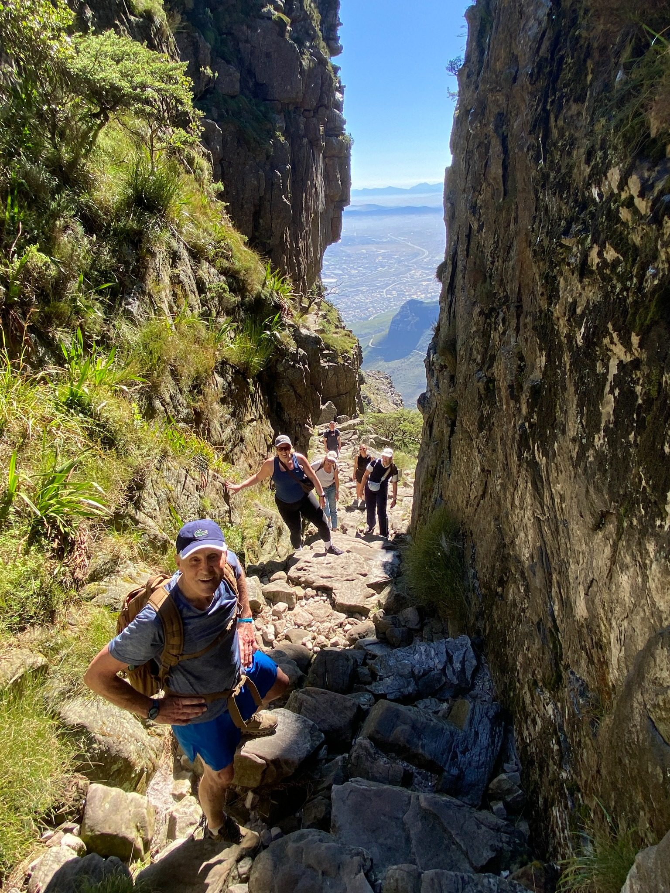
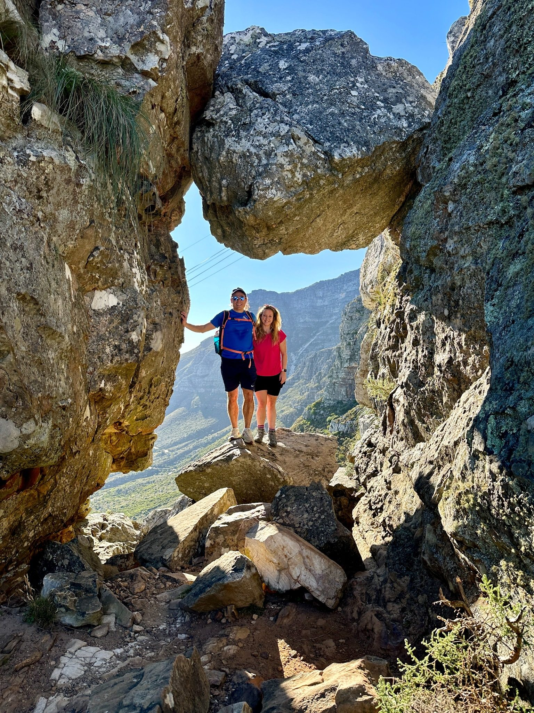
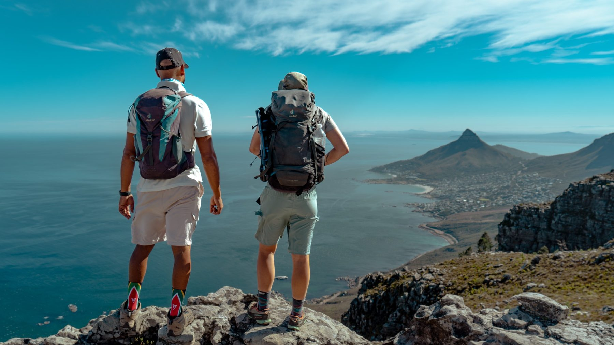
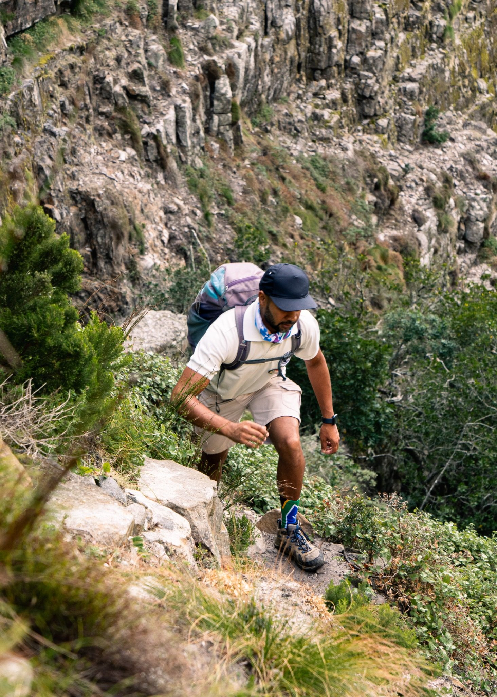
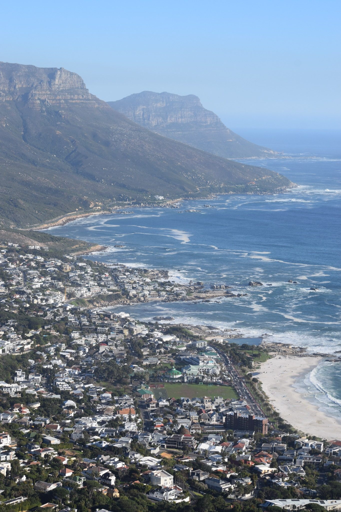
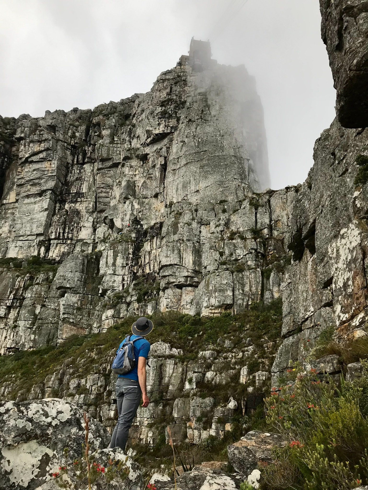
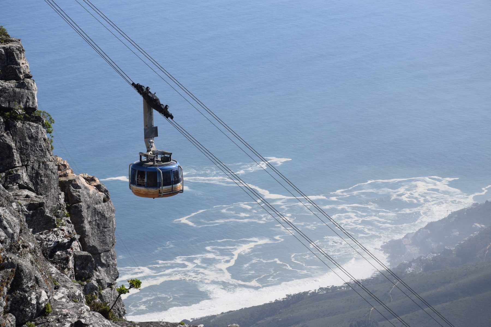

If you're planning to hike Table Mountain in Cape Town, choosing the route matters almost as much as choosing the day.
Two of the routes I'm asked about most often are Platteklip Gorge and India Venster. They both take you towards the top of the same mountain, but the experience under your feet is completely different.
Platteklip is the more straightforward option: steep stone steps, very little technical movement and a sustained climb through the gorge. India Venster is the adventurous option: varied terrain, hands-on rock scrambling, exposure to heights and changing views as the route winds around the mountain.
Having guided guests on both, I don't think the right question is simply, “Which route is harder?” The better question is: which route suits your fitness, confidence with heights and idea of a great mountain day?
Platteklip Gorge: straightforward does not mean easy
The name Platteklip comes from Afrikaans and translates roughly to “flat stone”. Once you're on the trail, the name makes sense. Much of the route is made up of stone steps of different shapes and sizes, zig-zagging steadily upwards into the gorge.
Platteklip gains roughly 650–700 metres of elevation over a relatively short distance. SANParks describes it as the most direct and most popular route to the top, and very accurately sums it up as “relentlessly up”. The path is well constructed and non-technical, but the sustained gradient makes it a serious workout.
That's why I prefer describing Platteklip as the less technical route rather than the “easy” route.
Guests who aren't used to prolonged uphill hiking can find it surprisingly tough. There aren't many sections where the mountain gives your legs a proper break, so pacing and a bit of determination go a long way.

What are the views like on Platteklip Gorge?
As you gain height, you get increasingly impressive views back towards Cape Town's City Bowl, Table Bay and the landscape beyond. The reward is not only the scenery. For many guests, the biggest moment is simply stepping onto the top after earning every metre of the climb.
Standing on Table Mountain — one of the official New7Wonders of Nature — after hiking there under your own power gives the summit a completely different meaning.
Heat and shade on Platteklip
There can be some shade early in the hike, but after that the route becomes very exposed. On warm days the stone and surrounding rock can make the climb feel even hotter, so I strongly favour an early start rather than tackling the gorge in the midday sun.
Water, sun protection and appropriate layers matter even when Cape Town looks perfectly clear from below.
India Venster: bring out your inner child
If Platteklip is about finding a rhythm and steadily climbing, India Venster is about interacting with the mountain.
This is the route I often describe as the one that brings out your inner child.
There are sections of rock scrambling — using your hands and feet to manoeuvre up and over rock — and the terrain keeps changing. For me, that hands-on movement takes me back to being a child, spending the day outside, hiking and climbing trees.

The route initially climbs Table Mountain's northern side before winding around towards the western side. That change in position opens up beautiful views over the Atlantic coastline and the surrounding mountain peaks behind Table Mountain.

Fitness and technical confidence are not the same thing
This is one of the most useful things to understand before choosing between the routes.
You can be very fit and still dislike India Venster.
A runner or regular gym-goer might have more than enough fitness for the climb but discover that exposed rock and scrambling make them uncomfortable. Equally, someone who loves scrambling may still find Platteklip's continuous uphill steps physically exhausting.
| What matters | Platteklip Gorge | India Venster |
|---|---|---|
| Uphill fitness | Important — sustained steep climbing | Important — steep and varied terrain |
| Scrambling | Minimal / essentially non-technical | Yes — hands and feet used on rock |
| Exposure to heights | Lower | Significantly more noticeable |
| Best suited to | Hikers wanting a direct, less technical summit route | Confident hikers wanting a more adventurous climb |
| Main challenge | Relentless uphill effort | Technical movement plus exposure |
What if you're afraid of heights?
If you have a genuine fear of heights, I would normally steer you towards Platteklip Gorge.
On India Venster, the issue isn't simply being “high up”. Exposure means being on steep terrain where you can see the drop and feel the open space around you. For somebody with vertigo or a strong fear response, getting close to an exposed edge can cause them to freeze, lose confidence in their balance or feel as though their body is unstable.
As guides, we're trained to assist guests with scrambling and movement on steep ground, but guidance can't remove somebody's fear of exposure. The goal is for you to enjoy the mountain, not spend several hours fighting anxiety.
This becomes especially important on a group hike, where one person's discomfort on technical terrain can affect the pace and experience of the whole group.

Which route has the better views?
Both are beautiful, but India Venster wins for variety in my book.
Platteklip gives you a classic perspective over central Cape Town and the city opening up below as you climb. India Venster keeps changing its outlook as you move around the mountain, eventually revealing the Atlantic coastline and surrounding peaks.

It's the view from the top — surrounding peaks, ocean and city all in one landscape. On Platteklip, I love the sense of achievement when a guest reaches the summit. On India Venster, it's the scrambling and that feeling of actually playing on the mountain.
Weather can change the route decision
Table Mountain has a reputation for changing conditions quickly, and that's not something to treat as a cliché. Sunshine in the city doesn't guarantee calm conditions higher up.
Wind, cloud, heat and wet rock can all change the character of a route. India Venster's exposed scrambling makes weather especially important. When conditions are unsuitable, the correct decision may be to switch routes, delay the hike or not hike at all.
SANParks advises hikers to watch the weather, carry waterproof and windproof clothing and turn back if bad weather threatens.

Can you take the cable car down after hiking?
Often, yes — and many visitors plan their hike around walking up and taking the Table Mountain Aerial Cableway down.
But I never recommend treating the cableway as guaranteed.
Operations are weather-dependent, and strong wind can stop the cableway. Conditions can change while you're hiking, so you should always be physically and mentally prepared for the possibility that you'll need to hike back down.

So which Table Mountain route would I choose?
If a friend was visiting Cape Town and asked me to choose one route for them, my first choice would be India Venster.
It's more varied, more interactive and gives you that sense that the journey to the top is part of the adventure rather than simply the way to reach the summit.
But there's an important condition attached to that recommendation.
If that friend had a problem with heights, limited mobility or wasn't comfortable scrambling, I'd take them up Platteklip Gorge instead.
Neither route is “better” for everybody. The best route is the one that allows you to challenge yourself while still enjoying where you are.
India Venster vs Platteklip Gorge: quick answer
Choose Platteklip Gorge if you want the most direct, less technical route to the top and would prefer to avoid exposed scrambling. Be ready for a steep, sustained uphill climb.
Choose India Venster if you are comfortable with heights, enjoy scrambling and want a more varied and adventurous route with changing views.
Frequently asked questions
Is Platteklip Gorge easy?
No. It is technically straightforward, but physically demanding because the route climbs steeply and continuously. SANParks rates it moderate to tough depending on fitness and weather.
Is India Venster suitable if I'm afraid of heights?
Usually not. The route includes exposed terrain and scrambling. If heights cause significant discomfort, Platteklip Gorge is generally the more suitable of these two options.
Do I need to scramble on Platteklip Gorge?
Platteklip is primarily a steep walking route on stone steps and rocky trail. It does not have the sustained technical scrambling that characterises India Venster.
How much elevation does Platteklip Gorge gain?
Expect roughly 650–700 metres of ascent from Tafelberg Road to the upper mountain over a relatively short distance.
Can I hike Table Mountain if the cableway is closed?
The cableway being closed doesn't automatically determine whether hiking conditions are suitable. Wind, rain, cloud, heat and route conditions all need to be considered separately. If you hike up, be prepared for a hiking descent if the cableway isn't operating.
Should I hike Table Mountain with a guide?
Experienced local hikers may be comfortable hiking independently. For visitors unfamiliar with the mountain — particularly on India Venster — a qualified guide can help with route choice, pacing, scrambling technique, changing conditions and safety decisions.
Planning your hike? You may also find our Safe Hiking in Cape Town guide useful before heading onto the mountain.